전기산업기사 (2005-08-07 기출문제)
1과목: 전기자기학
1. 전계 E=i3x2+j2xy2+kx2yz의 div E는 얼마인가?
- -i6x+jxy+kx2y
- i6x+j6xy+kx2y
- -6x+xy+x2y
- 6x+4xy+x2y
(정답률: 76%)

2. 자극의 세기가 8×10-6[Wb]이고, 길이가 30[cm]인 막대자석을 120[AT/m] 평등 자계내에 자력선과 30° 의 각도로 놓았다면 자석이 받는 회전력은 몇 [Nㆍm] 인가?
- 1.44×10-4
- 1.44×10-5
- 2.88×10-4
- 2.88×10-5
(정답률: 63%)
3. 전류와 자계와 직접 관련이 없는 법칙은?
- 앙페에르의 오른나사 법칙
- 플레밍의 왼손법칙
- 비오사바르의 법칙
- 렌쯔의 법칙
(정답률: 63%)
4. 어느 강철의 자화곡선을 응용하여 종축을 자속밀도(B) 및 투자율(μ)이라 하고, 횡축을 자화의 세기(H)라고 할 때 투자율 곡선을 잘 표현된 것은?
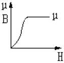
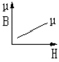
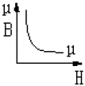
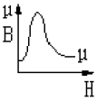
(정답률: 47%)
5. 자화의 세기 Pm[Wb/m2]을 자속밀도 B[Wb/m2]과 비투자율 μγ로 나타내면?
- Pm=(1-μr)B
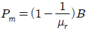
- Pm=(μr-1)B
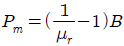
(정답률: 71%)
6. 도체를 접지시킬 때 도체의 전위는 어떤 전위에 해당되는가?
- 영전위
- 정전위
- 부전위
- 전위
(정답률: 58%)
7. 유전률 ε[F/m], 고유저항 ρ[Ωㆍm]의 유전체로 채운 정전용량 C[F]의 콘덴서에 전압 V[V]를 가할 때 유전체 중에 발생하는 열량은 시간 t 초간에 몇 cal 가 되겠는가?
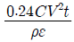
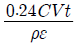
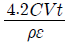
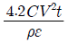
(정답률: 50%)
8. 자체 인덕턴스가 100[mH] 인 코일에 전류가 흘러 20[J] 의 에너지가 축적되었다. 이때 흐르는 전류는 몇 A 인가?
- 2
- 10
- 20
- 100
(정답률: 73%)
9. 자유공간의 변위전류가 만드는 것은?
- 전계
- 전속
- 자계
- 분극지력선
(정답률: 65%)
10. 두 개의 도체에서 전위 및 전하가 각각 V1, Q1 및 V2, Q2일 때 이 도체계가 갖는 에너지는 얼마인가?
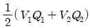
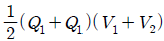
- V1Q1+V2Q2
- (Q1+Q1)(V1+V2)
(정답률: 67%)
11. 다음 사항 중 옳은 것은?
- 빛은 회전 및 간섭 현상을 갖는 전자파임과 동시에 입자성을 가진다는 것은 드브로이가 광전효과를 설명하기 위하여 발견하였다.
- 헤르츠는 라이덴병 전하 방전실험으로 전자파의 발생을 입증하였다.
- 전계와 자계의 세기를 적절히 조절하여 인공적으로 원자를 가속시켜 전자파를 발생시키는 장치로 선형 가속기가있다.
- 전자파인 빛을 방출하는 천체의 지구에 대한 운동을 읽기 위해서는 본래의 파장에 비하여 받아들인 파장이 어느정도로 변화되는가를 관측하는 톰슨 효과를 이용한다.
(정답률: 37%)
12. a, b, c 인 도체 3개에서 도체 a를 도체 b 로 정전차폐 하였을 때의 조건으로 옳은 것은?
- c 의 전하는 a 의 전위와 관계가 있다.
- a, b 간의 유도계수는 없다.
- a, c 간의 유도계수는 0 이다.
- a 의 전하는 c 의 전위와 관계가 있다.
(정답률: 48%)
13. 2[cm]의 간격을 가진 선간전압 6600[V]인 두 개의 평행도선에 2000[A]의 전류가 흐를 때 도선 1[m] 마다 작용하는 힘은 몇[N/m] 인가?
- 20
- 30
- 40
- 50
(정답률: 56%)
14. 반지름이 a[m]되는 구도체에 Q[C]의 전하가 주어졌을 때 이 구의 중심에서 5a[m] 되는 점의 전위는 몇 [V] 인가?
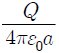
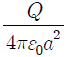
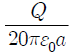
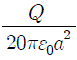
(정답률: 67%)
15. 벡터 A=i+4j+3k와 벡터 B=4i+2j-4k는 서로 어떤 관계에 있는가?
- 평행
- 면적
- 접근
- 수직
(정답률: 72%)
16. 비유전률이 10 인 유리콘덴서와 동일한 크기의 비유전률 1인 공기콘덴서가 있다. 유리콘덴서에 380[V]의 전압을 가할 때 동일한 전하를 축적하기 위하여 공기콘덴서에 필요한 전압은 몇 [kV] 인가?
- 1.8
- 3.8
- 5.4
- 7.6
(정답률: 64%)
17. 무한평면 전하에 의한 외부 전계의 크기는 거리와 어떤 관계가 있는가?
- 거리에 관계없다.
- 거리에 비례한다.
- 거리에 반비례한다.
- 거리의 자승에 비례한다
(정답률: 29%)
18. 원점에 전하 0.4[μC] 있을 때 두 점 (4 ,0 ,0) [m]와 (0 ,3 ,0)[m] 간의 전위차는 몇[V] 인가?
- 30
- 100
- 150
- 300
(정답률: 31%)
19. 투자율이 서로 다른 두 자성체의 경계면에서의 굴절각에 대한 설명으로 옳은 것은?
- 투자율에 비례한다.
- 투자율에 반비례한다.
- 투자율에 관계없이 일정하다.
- 비투자율과 자속에 비례한다.
(정답률: 51%)
20. 5[C]의 전하가 비유전율 εs=2.5인 매질 내에 있다고 하면 이 전하에서 나오는 전체 전기력선의 수는 몇 개인가?
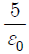
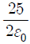
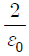
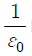
(정답률: 43%)
2과목: 전력공학
21. 어떤 콘덴서 3개를 선간전압 3300[V],주파수 60[Hz]의 선로에 △로 접속하여 60[kVA]가 되도록 하려면 콘덴서 1개의 정전 용량은 약 몇 [μF]로 하여야 하는가?
- 4.87
- 9.74
- 14.61
- 19.48
(정답률: 36%)
22. 송전선로에서 역섬락을 방지하려면?
- 가공지선을 설치한다.
- 피뢰기를 설치한다.
- 탑각 접지저항을 적게 한다.
- 소호각을 설치한다.
(정답률: 76%)
23. 계통 내에 각 기기, 기구 및 애자 등의 상호간의 적정한 절연강도를 지니게 함으로서 계통 설계를 합리적으로 할 수 있게 한 것을 무엇이라 하는가?(오류 신고가 접수된 문제입니다. 반드시 정답과 해설을 확인하시기 바랍니다.)
- 기준충격절연강도
- 보호계전방식
- 절연계급 선정
- 절연협조
(정답률: 56%)
24. 낙차 290[m], 회전수 500[rpm]인 수치를 225m의 낙차에서 사용할 때의 회전수는 약 몇 [rpm] 으로 하면 적당한가?
- 400
- 440
- 480
- 520
(정답률: 46%)
25. 영상변류기와 관계가 가장 깊은 계전기는?
- 과전류계전기
- 과전압계전기
- 선택접지계전기
- 차동계전기
(정답률: 56%)
26. 옥내배선 시설공사에서 과부하 또는 단락사고로부터 전선이나 기구를 보호하기 위하여 설치하는 것이 아닌 것은?
- 전류절환스위치
- 전자개폐기
- 브레이크,(Breaker)
- 퓨즈(fuse)
(정답률: 41%)
27. 정삼각형 배치의 선간거리가 5[m]이고, 전선의 지름이 1[cm]인 3상 가공 송전선의 1선의 정전용량은 약 몇 [μF/km]인가?
- 0.008
- 0.016
- 0.024
- 0.032
(정답률: 55%)
28. 피뢰기를 가장 적절하게 설명한 것은?
- 동요전압의 파두,파미의 파형의 준도를 저감하는 것
- 이상전압이 내습하였을때 방전에의한 기류를 차단하는 것.
- 뇌동요 전압의 파고를 저감하는 것.
- 1선이 지락할 때 아크를 소멸시키는 것.
(정답률: 66%)
29. 그림과 같이 4도체의 복도체로 송전할 경우, 소선 상호간의 등가 평균거리는 얼마인가?
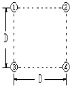
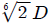
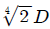
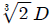
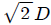
(정답률: 51%)
30. 모선보호에 사용되는 계전방식은?
- 과전류계전방식
- 전력평형보호계전방식
- 표시선계전방식
- 전류차동계전방식
(정답률: 34%)
31. 차단기에 개폐에 의한 이상전압은 송전선의 대지 전압의 약 몇 배 정도가 최고인가?
- 4
- 6
- 10
- 12
(정답률: 36%)
32. 송전선로의 안정도 항상 대책이 아닌것은?
- 병행 다행선이나 복도체방식을 채용
- 속응 여자방식을 채용
- 계통의 직력리액턴스를 증가
- 고속도 차단기의 이용
(정답률: 71%)
33. 일반회로정수가 A, B, C, D 이고 송전단 상전압이 Es인 경우, 무부하시의 충전전류(송전단 전류)는?
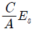
- ACEs
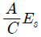
- CEs
(정답률: 56%)
34. 중유 연소 기력발전소의 공기 과잉률은 대략 얼마인가?
- 0.⑤
- 1.22
- 2.38
- 3.45
(정답률: 49%)
35. 다음 중 해안지방의 송전용 나전선으로 가장 적당한 것은?
- 동선
- 강선
- 알루미늄합금선
- 강심알루미늄선
(정답률: 34%)
36. 변류기를 개방할 때 2차측을 단락하는이유는?
- 1차측 과전류 보호
- 1차측 과전압 방지
- 2차측 과전류 보호
- 2차측 절연보호
(정답률: 71%)
37. 동일한 전압에서 동일한 전력을 송전할 때 역률을 0.8에서 0.9로 개선하면 전력손실은 약 몇 [%] 정도 감소하는가?
- 5
- 10
- 20
- 40
(정답률: 49%)
38. 교류송전에서 송전거리가 멀어질수록 동일 전압에서의 송전 가능 전력이 적어진다. 그 이유로 가장 타당한 것은?
- 선로의 어드미턴스가 커지기 때문이다.
- 선로의 유도성 리액턴스가 커지기 때문이다.
- 코로나 손실이 증가하기 때문이다.
- 페란티 현상 때문이다.
(정답률: 59%)
39. 충전된 콘덴서에 에너지에 의해 트립되는 방식으로 정류기, 콘덴서 등으로 구성되어 있는 차단기의 트립 방식은?
- 콘덴서 트립방식
- 직류전압 트립방식
- 과전류 트립방식
- 부족전압 트립방식
(정답률: 71%)
40. 60[Hz], 2극 터빈발전기의 과속도 트립은 몇 [rpm] 인가? (단, 과속도 트림은 정격 회전수의 1.1 배라고 한다.)
- 3440
- 3960
- 4110
- 4320
(정답률: 63%)
3과목: 전기기기
41. 돌극형 동기 발전기에서 직축 리액턴스 Xd와 횡축 리액턴스 Xq는 크기 사이에 어떤 관계가 있는가?
- Xd=Xq
- Xd＞Xq
- Xd＜Xq
- 2Xd=Xq
(정답률: 49%)
42. 반도체 사이리스터에 의한 제어는 어느 것을 변화시키는가?
- 주파수
- 전류
- 위상각
- 최대값
(정답률: 64%)
43. 변압기의 병렬 운전시 필요하지 않은것은?
- 각 변압기의 극성이 같을 것
- 각 변압기의 권수비가 같고 1차 및 2차의 정격 전압이 같을 것.
- 정격출력이 같을 것.
- 각 변압기의 백분율 임피던스 강하가 같을 것
(정답률: 52%)
44. 정격출력 2[kVA], 200/100[V], 50[Hz]의 변압기의 2차 단락 시험 결과 임피던스 전압6.8[V], 임피던스 와트 60[W]를 얻었다. 이 변압기의 2차를 1차로 환산한 저항과 리액턴스는 ?
- r21=0.68, x21=0.65
- r21=0.5, x21=0.32
- r21=0.6, x21=0.32
- r21=0.6, x21=0.4
(정답률: 39%)
45. 3상 유도전동기의 기동법 중 전전압 기동에 대한 설명으로 틀린 것은?
- 소용량 농형전동기의 기동법이다.
- 기동시간이 긴 전동기에 적용한다.
- 기동 전류는 정격 전류의 4~6배 정도이다.
- 직접 정격전압을 가한다.
(정답률: 33%)
46. 일정 토크 부하에 알맞은 유도 전동기의 주파수 제어에 의한 속도제어방법을 사용할 때 공급전압과 주파수는 어떤 관계를 유지하여야 하는가?
- 공급전압이 항상 일정하여야 한다.
- 공급전압과 주파수는 반비례 되어야 한다.
- 공급전압과 주파수는 비례되어야 한다.
- 공급전압의 자승에 반비례 하는 주파수를 공급 하여야한다.
(정답률: 44%)
47. A,B 2대의 동기 발전기(同期發電機)를 병렬 운전 중 계통 주파수를 바꾸지 않고 B기의 역률을 좋게 하는 것은?
- A기의 여자(勵磁)전류를 증대
- A기의 원동기(原動機)출력을 증대
- B기의 여자전류를 증대
- B기의 원도기 출력을 증대
(정답률: 46%)
48. 직류 분권 발전기에서 극수 8, 전기자 총 도체수 240, 각 자극의 자속은 0.02[Wb]일 때 회전수가 1200[rpm]이라면 전기자에 유기되는 전기력은 몇 [V]인가? (단, 전기자 권선은 파권이다.)
- 110[V]
- 220[V]
- 384[V]
- 440[V]
(정답률: 62%)
49. 포화하고 있지 않은 직류 발전기의 회전수가 1/2로 되였을 때 기전력을 전과 같은 값으로 하자면 여자전류를 전에 비해 얼마로 해야 하는가?
- 1/2배
- 1배
- 2배
- 4배
(정답률: 60%)
50. 정격전압 6000[V],용량 4000[kVA]의 3상 동기발전기에서 여자전류 200[A]에서의 무부하 단자전압이 6000[V],단락전류는 500[A]라 한다. 단락비는?
- 1.3
- 1.25
- 1.20
- 1.77
(정답률: 21%)
51. 다음 중 직류전동기의 속도제어법이 아닌 것은?
- 계자 제어법
- 전압 제어법
- 저항 제어법
- 주파수 제어법
(정답률: 50%)
52. 극수 6, 분당 회전수가 1200인 교류발전기와 병렬 운전하는 극수가 8인 교류발전기의 회전수[rpm]는? (단, 주파수는 60[Hz]이다.)
- 1200
- 900
- 750
- 520
(정답률: 66%)
53. 3상 변압기의 병렬운전이 불가능한 결선조합은?
- △-Y 와 △-Y
- Y-△ 와 Y-△
- △-△ 와 △-△
- △ -Y 와 △-△
(정답률: 58%)
54. 용량 10[kVA]인 단권변압기를 그림처럼 접속하면 역률 80[%]인 부하에 몇 [kW]를 공급할 수 있는가?
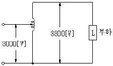
- 8.8
- 88
- 110
- 137.5
(정답률: 25%)
55. 3상 유도전동기의 속도제어 방법 중 회전자의 슬립 주파수와 같은 주파수의 전압을 공급하여 속도를 제어하는 것은?
- 2차 저항법
- 직류여자법
- 주파수 변환법
- 2차 여자법
(정답률: 44%)
56. 사이리스터에서의 래칭 전류에 과한 설명으로 옳은 것은?
- 게이트를 개방한 상태에서 사이리스터 도통 상태를 유지하기 위한 최소의 순전류
- 게이트 전압을 인가한 후에 급히 제거한 상태에서 도통 상태가 유지되는 최소의 순전류
- 사이리스터의 게이트를 개방한 상태에서 전압을 상승하면 급히 증가하게 되는 순전류
- 사이리스터가 턴온하기 시작하는 순전류
(정답률: 50%)
57. 계전기 중 변압기의 보호에 사용되지 않는 계전기는?
- 비율 차동 계전기
- 차동 계전기
- 부흐흘쓰 계전기
- 임피던스 계전기
(정답률: 60%)
58. 직류 전동기의 규약 효율은?
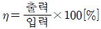
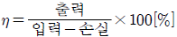
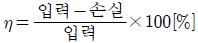
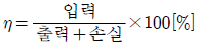
(정답률: 42%)
59. 어느 3상 유도 전동기의 전전압 기동 토크는 전부하시의 2배이다. 전 전압의 1/2로 기동할 때 기동 토크는 전부하시의 몇 배 인가?
- 0.5
- 1.0
- 1.5
- 2.0
(정답률: 27%)
60. S, C, R(실리콘 정류 소자)의 특징이 아닌 것은?
- 과전압에 약하다.
- 아크가 생기지 않으므로 열발생이 적다.
- 전류가 흐르고 있을 때 양극 전압강하가 크다.
- 도통시간이 짧다.
(정답률: 34%)
4과목: 회로이론
61. 30[Ω]의 저항과 40[Ω]의 유도성 리액턴스가 병렬 연결되어있다. 이 R-L병렬회로에
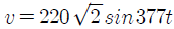
의 전압을 가할 때 전원에 흐르는 전류[A]는 약 얼마인가?(오류 신고가 접수된 문제입니다. 반드시 정답과 해설을 확인하시기 바랍니다.)- i=12.96sin(377t-36.87)
- i=9.17sin(377t-36.87)
- i=12.96 ∠-36.87)
- i=10.37+j7.78
(정답률: 40%)
62. 어느 3상회로의 선간전압을 측정하니 Va=120[V], Vb=-60-j80[V], Vc=-60+j80[V]이었다. 불평형률[%]은?
- 13
- 27
- 34
- 41
(정답률: 28%)
63. 파형의 파형률 값이 잘못된 것은?
- 정현파의 파형률은 1.414 이다.
- 구형파의 파형률은 1.0 이다.
- 전파 정류파의 파형률은 1.11이다.
- 반파 정류파의 파형률은 1.571이다.
(정답률: 39%)
64. 피상전력이 20[kVA], 유효전력이 8.08[kW]이면 역률은?
- 1.414
- 0.866
- 0.707
- 0.404
(정답률: 51%)
65. 단상변압기 3대(100[KVA]×3)로 △결선하여 운전 중 1대 고장으로 V결선한 경우의 출력[kVA]은?
- 100[kVA]
- 173[kVA]
- 245[kVA]
- 300[kVA]
(정답률: 70%)
66. 수동 4단자 회로망(2단자 쌍 회로망)이 가역적이기 위한 조건으로 옳지 않은 것은?
- AB-CD=1
- Z12=Z21
- Y12=y21
- H12=-H21
(정답률: 63%)
67. R, L, C 직렬 회로에서 저항의 값이 어느 값이어야 임계적으로 제동되는가?
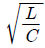
×L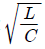
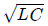
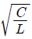
(정답률: 70%)
68. 다음과 같은 왜형파 교류전압, 전류의 전력은 몇 [W]인가?
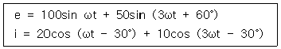
- 750
- 1000
- 1299
- 1732
(정답률: 37%)
69. R-L-C 직렬회로에 t=0에서 교류전압 e=Emsin (ωt+θ)[V]를 가할 때
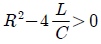
이면 이 회로는?- 진동적이다.
- 비 진동적이다.
- 임계적이다.
- 감쇠진동이다
(정답률: 56%)
70. 3r[Ω]인 6개의 저항을 그림과 같이 접속하고 평형 3상전압 [V]를 가했을 때 전류 I는 몇 [A]인가? (단, r=2[Ω], V=200 √3[V]이다.)
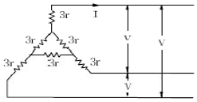
- 10
- 15
- 20
- 25
(정답률: 27%)
71. 그림과 같은 브리지가 평형되어 있다. 미지 코일의 저항 R4및 인덕턴스 L4의 값은 얼마인가?
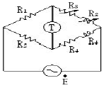
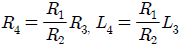
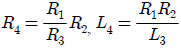
- R4=R1R2R3, L4=R1R2R3
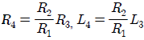
(정답률: 39%)
72. 인덕턴스 L=20[mH]인 코일에 실효값 V=50[V], 주파수 f=60[Hz]인 정현파 전압을 인가했을 때 코일에 축적되는 평균 자기 에너지 [J]은?
- 0.44
- 4.4
- 0.63
- 6.3
(정답률: 47%)
73. 대칭 좌표법에서 사용되는 용어 중에서 3상에 공통인 성분을 표시하는 것은?
- 공통분
- 역상분
- 영상분
- 정상분
(정답률: 67%)
74. 라플라스 변환함수
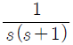
에 대한 역변환은?- 1+e-t
- 1-e-t
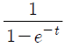
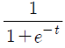
(정답률: 48%)
75. 그림과 같은 피이드백 회로의 종합 전달함수는?
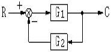
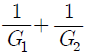
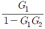
(정답률: 56%)
76. 제동계수가 δ=0 이면 어떤 경우인가?
- 무제동
- 부족제동
- 과제동
- 임계제동
(정답률: 34%)
77. 선형 회로에 가장 관계가 있는 것은?
- 키르히호프의 법칙
- 중첩의 원리
- V=RI2
- 패러데이의 전자유도 법칙
(정답률: 46%)
78. 그림과 같이 T형 4단자 회로망의 A,B, C, D파라미터 중에 B값은?
(정답률: 54%)
79. 의 전류가 흐른다. 이를 복소수로 표시하면?
- 6.12-j3.5
- 17.32-j5
- 3.54-j6.12
- 5-j17.32
(정답률: 39%)
80. 의 역 Laplace 변환은?
- e-t-e-3t
- et-e3t
- e-t-e3t
- et-e-3t
(정답률: 64%)
5과목: 전기설비기술기준 및 판단 기준
81. 공사현장 등에 사용하는 가반형의 용접전극을 사용하는 아크용접장치의 용접변압기의 1차측 전로의 대지전압은 몇[V] 이하이어야 하는가?
- 150
- 220
- 300
- 480
(정답률: 67%)
82. 모든 접지공사의 접지극으로 사용할 수 있는 지중에 매설된 금속제 수도관로는 대지와의 전기저항치가 몇 [Ω]이하의 값을 유지하고 있어야 하는가?
- 1
- 2
- 3
- 5
(정답률: 36%)
83. 저압 옥내 간선에서 분기하여 전기사용 기계 기구에 이르는 저압 옥내전로는 저압 옥내간선과의 분기점에서 전선의 길이가 몇 [m] 이하인 곳에 개폐기 및 과전류차단기를 시설하여야 하는가? (단, 분기점에서 개폐기 및 과전류 차단기까지의 전선의 허용전류 등은 고려하지 않고 일반적인 경우임)
- 2
- 3
- 4
- 5
(정답률: 37%)
84. 특별 제3종 접지공사를 하여야 하는 금속체와 대지 간의 전기저항치가 몇 [Ω] 이하의 경우에는 특별 제3종 접지공사를 한 것으로 보는가?
- 3
- 5
- 8
- 10
(정답률: 59%)
85. 자동 차단기가 설치되어 있지 않은 전로에 접속되어 있는 440[V] 전동기의 외함을 접지할 때, 접지 저항값은 몇 [Ω] 이하이어야 하는가?
- 5
- 10
- 30
- 50
(정답률: 56%)
86. 지중전선로의 전선으로 사용할 수 있는 것은?
- 케이블
- 다심형 전선
- 인하용 절연전선
- 600[V] 불소수지 절연전선
(정답률: 67%)
87. 가공전선로의 지지물에 시설하는 지선으로 연선을 사용할 경우 소선은 최소 몇 가닥 이상이어야 하는가?
- 3
- 5
- 7
- 9
(정답률: 67%)
88. 전자 개폐기의 조작회로 또는 초인벨, 경보벨 등에 접속하는 전로로서 최대사용전압이 60[V] 이하인 것으로 대지전압이 몇 [V] 이하인 강전류 전기의 전송에 사용하는 전로와 변압기로 결합되는 것을 소세력회로라 하는가?
- 100
- 150
- 300
- 440
(정답률: 56%)
89. 가공전화선로에 유도장해를 방지하기 위한 특별고압 가공전선로의 유도전류 제한사항 으로 옳은 것은?
- 사용전압이 60000[V] 이하인 경우에는 전화선로의 길이 12[Km] 마다 유도전류가 1[mA]를 넘지 않도록 할것.
- 사용전압이 60000[V] 이하인 전화선로의 길이 12[km] 마다 유도전류가 1.5[mA]를 넘지 않도록 할 것
- 사용전압이 60000[V]를 넘는 경우에는 전화선로의 길이 40[Km] 마다 유도전류가 1[μA]를 넘지 않도록 할 것
- 사용전압이 60000[V]를 넘는 경우에는 전화선로의 길이 40[Km] 마다 유도전류가 3[μA]를 넘지 않도록 할 것
(정답률: 39%)
90. 특별고압 가공전선로 및 선로길이 몇[Km] 이상의 고압 가공전선로에는 보안상 특히 필요한 경우에 가공전선로의 적당한 곳에서 통화 할 수 있도록 휴대용 또는 이동용의 전력보안 통신용 전화설비를 시설하여야 하는가?
- 2
- 3
- 4
- 5
(정답률: 27%)
91. 금속관공사에 의한 저압 옥내배선을 할 때 콘크리트에 매설하는 것은 관의 두께가 몇 [mm] 이상이어야 하는가?
- 0.8
- 1.0
- 1.2
- 1.5
(정답률: 50%)
92. 가공 전선로의 지지물에 취급자가 오르고 내리는데 사용하는 발판 못 등은 지표상 몇 [m] 미만에 시설하여서는 아니되는가?
- 1.2
- 1.8
- 2.2
- 2.5
(정답률: 70%)
93. 사용전압이 154[kV]인 가공전선로를 제1종 특별고압 보안공사로 시설할 때 사용되는 경동연선의 최소 단면적은 몇 [mm2]인가?
- 55
- 100
- 150
- 200
(정답률: 59%)
94. 발전기, 변압기, 조상기, 모선 또는 이를 지지하는 애자는 단락전류에 의하여 생기는 어느 충격에 견디어야 하는가?
- 기계적 충격
- 철손에 의한 충격
- 동손에 의한 충격
- 열적 충격
(정답률: 61%)
95. 옥내에 시설하는 전동기가 소손되는 것을 방지하기 위한 과부하 보호 장치를 하지 않아도 되는 것은?
- 전동기 출력이 4[kW]이며 취급자가 감시할 수 없는 경우
- 정격출력이 0.2[kW] 이하인 경우
- 전류차단기가 없는 경우
- 정격출력이 10[kW] 이상인 경우
(정답률: 57%)
96. 66[kV] 가공전선이 건조물과 제1차 접근상태로 시설되는 경우 가공전선과 건조물사이의 이격거리는 최소 몇 [m] 이상이어야 하는가?
- 3.0
- 3.2
- 3.4
- 3.6
(정답률: 15%)
97. 발, 변전소에서 차단기에 사용하는 압축공기장치의 공기압축기는 최고 사용압력의 몇 배의 수압을 계속하여 10분간 가하여 시험한 경우 이상이 없어야 하는가?
- 1.25
- 1.5
- 1.75
- 2
(정답률: 51%)
98. 고압 가공전선이 안테나와 접근상태로 시설되는 경우, 가공전선과 안테나와의 이격거리는 고압 가공전선으로 사용되는 전선이 케이블이 아니라면 몇 [cm] 이상으로 이격시켜야 하는가?
- 60
- 80
- 100
- 120
(정답률: 45%)
99. 수용장소의 인입선에서 분기하여 지지물을 거치지 않고 다른 수용장소의 인입구에 이르는 부분의 전선을 무엇이라 하는가?
- 옥상배선
- 옥측배선
- 연접인입선
- 가공인입선
(정답률: 56%)
100. 특별고압 전선로의 철탑의 가장 높은 곳에 220[V]용 항공장애등을 설치하였다. 이 등기구의 금속제 외함은 몇 종 접지공사를 하여야 하는가?
- 제1종
- 제2종
- 제3종
- 특별 제3종
(정답률: 37%)
div E를 구하기 위해서는 각각의 성분에 대해 편미분을 하고 그 합을 구하면 된다.
따라서,
div E = (∂/∂x)(i3x2) + (∂/∂y)(j2xy2) + (∂/∂z)(kx2yz)
= 6x + 4xy + x2y
따라서, 정답은 "6x+4xy+x2y"이다.